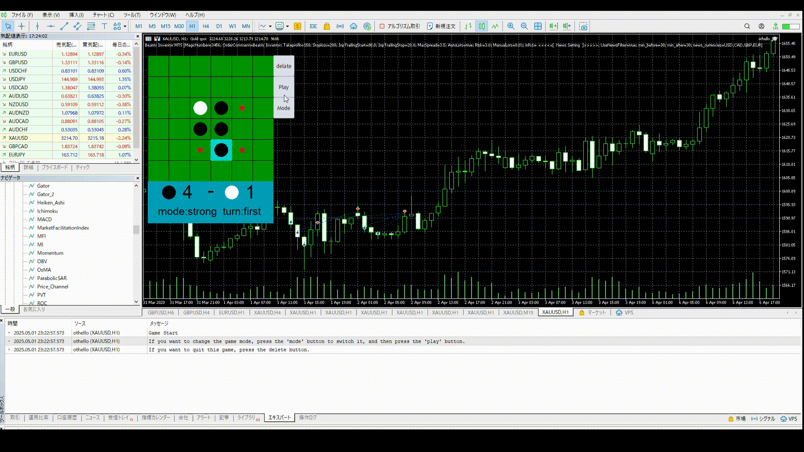

あるときネットサーフィンをしていたら、MT5(FXの取引アプリだと思ってください)でテトリスがプレイできるソフトを発見。 だったらオセロも作れるんじゃないかと考えて作成しました。
基本的なUIは、Mql5に標準搭載されているCCanvasというライブラリを使用しています。 そこに正方形と円を組み合わせて描くことでオセロを実装しています。
このプログラムは、チャートに適用するとデフォルト設定で自動的にスタートします。別のモードで遊びたいときはModeボタンとPlayボタンを適宜使用してください。
また、追加してほしい機能やバグがあった場合、報告していただけると助かります。
・PCで問題なく動作することは確認済みですが、万が一損害が発生した場合、当サイトは一切の責任を負いません。
・二次配布は基本的に黙認します。自由にしていただいて結構ですが、自己責任でお願いします。